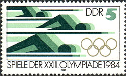
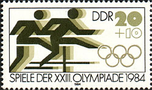
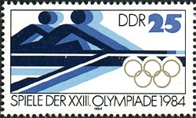
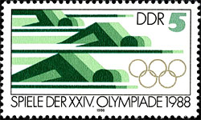
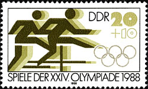
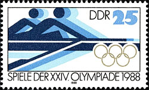
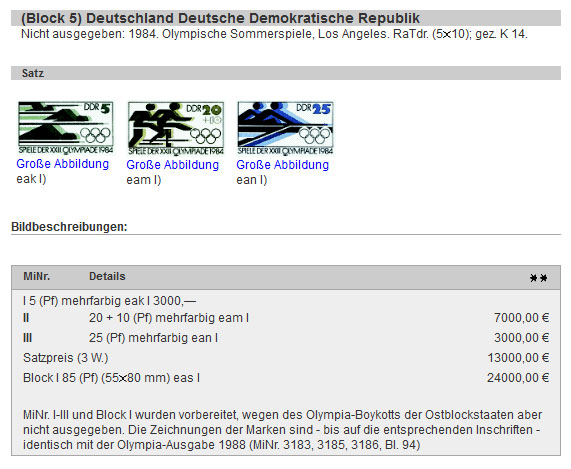
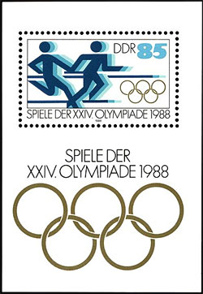

"BOYCOTT BREAKING" STAMPS OF THE GDR
Converting Printed Paper into Gold
The Western free countries protested against the armed invasion of Afghanistan by the troops of USSR by boycotting the 1980 Olympic Games in Moscow, the capital of the USSR. In retaliation, four years later the Warsaw block countries boycotted the Olympic Games in Los Angeles, USA.
To commemorate the future participation of East German sportspeople in Los Angeles, the GDR postal administration prepared in advance a set of six stamps and a miniature sheet. It already printed a small quantity of these stamps and, partially, the miniature sheet, but hasn't issued them due to the mentioned boycott.
The whole matter would had not get publicity if in 1988 a citizen of West Germany hadn't be able to buy in 1988, at the Leipzig Autumn Fair (i.e. in East Germany) three sheets of 50 stamps that looked peculiar to him. Indeed, they were identical to stamps issued for the 1988 Seoul edition of the Olympic Games (second row, below) but they were inscribed with the year 1984 and the Roman numerals of the boycotted Los Angeles ones (first row below).






The German Federal Post (Deutsche Bundespost), as legal successor of the GDR Post, claimed in 1991 the ownership of the sheets of 50 sets, asking for their confiscation but was sued and lost twice, in two courts of justice. Accordingly, since 1996 the stamps and the MS are listed in the Michel catalogue as non issued, what we show below on a small excerpt from the Michel Catalogue Online Edition 2012. Source

We display below the miniature sheet versions of both issues. It is somehow strange that a large quantity of non issued stamps was not destroyed by the GRD post after the announcement of the boycott and then they suddenly appeared, four years later, in hands of a citizen from West Germany, the country with the highest interest in such stamps and whose collectors had the means to pay for the possession of such exotic luxury. As usual in such cases, already the buzz created in philatelic circles was worth the whole operation.

The 1988 set and the miniature sheet were the last olympic ones issued by the German Democratic Republic, a country that collapsed in 1989. With its collapse ended for good some suspect philatelic machinations, like the Locking Values stamps and like the one presented above.
Created: 05/17/2012. Revised: 1/11/2024.
Copyright © 2012 - 2024 by Victor Manta, Switzerland/USA.
All rights reserved worldwide.